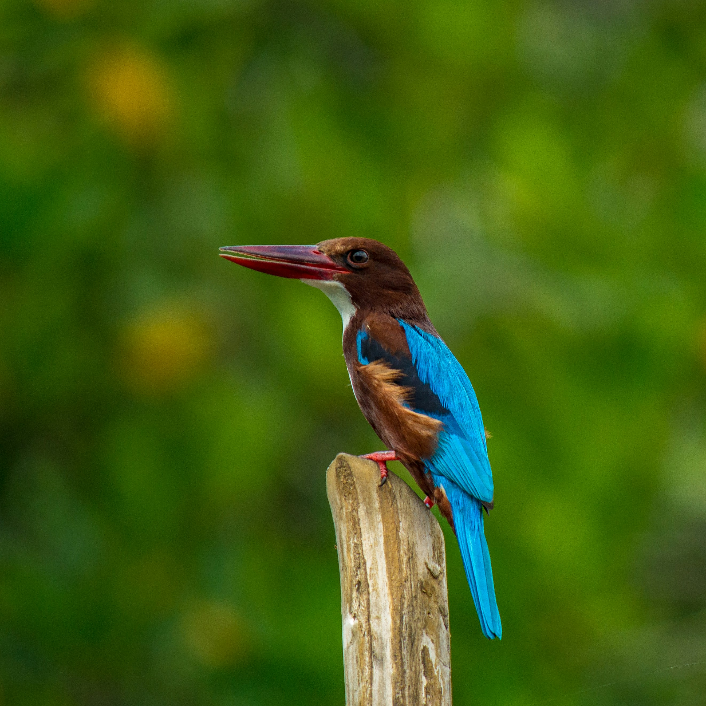

The White-Throated Kingfisher is a large and brilliantly coloured kingfisher with a bright blue back and wings, rich chestnut-brown head and body, white throat and breast, and a powerful red bill. Despite belonging to the kingfisher family, it is not restricted to water and can frequently be found in fields, gardens, woodland edges, plantations, and urban areas. It hunts a wide range of prey, including insects, lizards, frogs, small birds, and other small animals, while fish may also be taken when available. It often sits quietly on an exposed perch before dropping suddenly onto its prey. Its vivid colours and powerful flight make it one of the most impressive kingfishers of South Asia.
Family: Alcedinidae